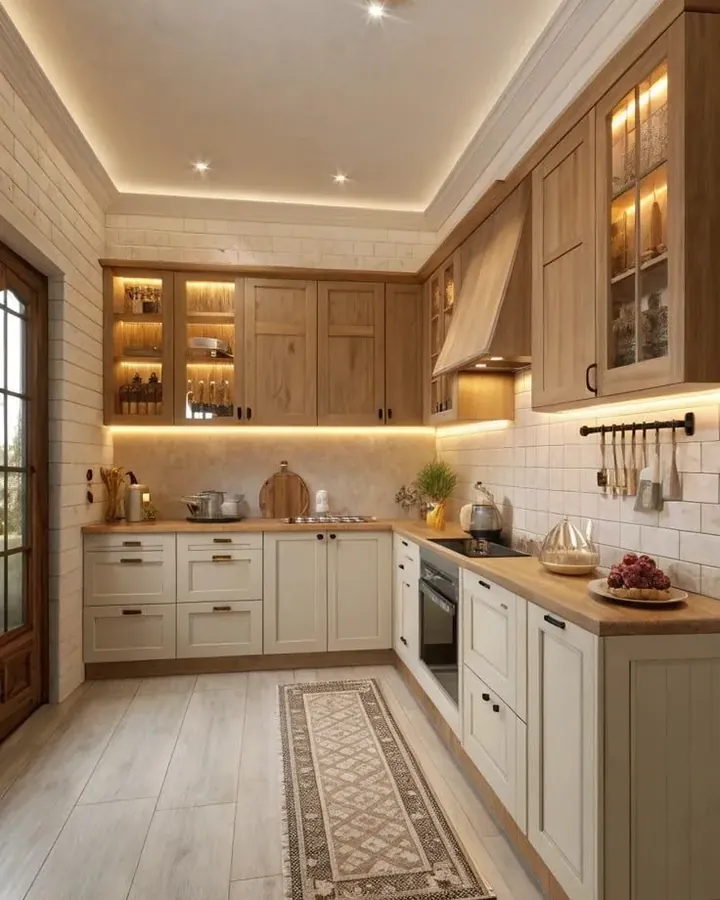
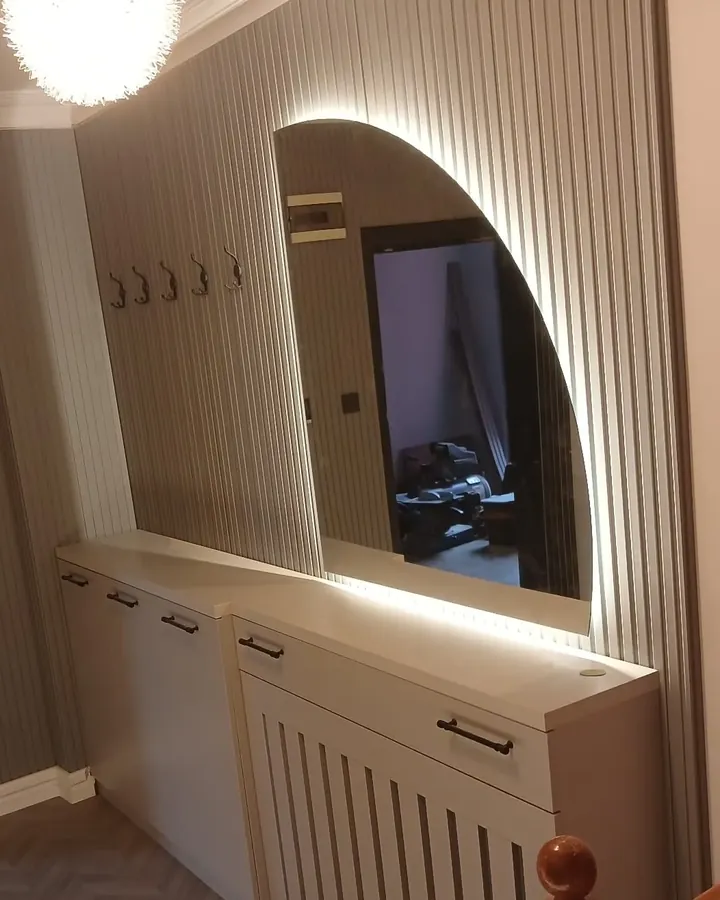
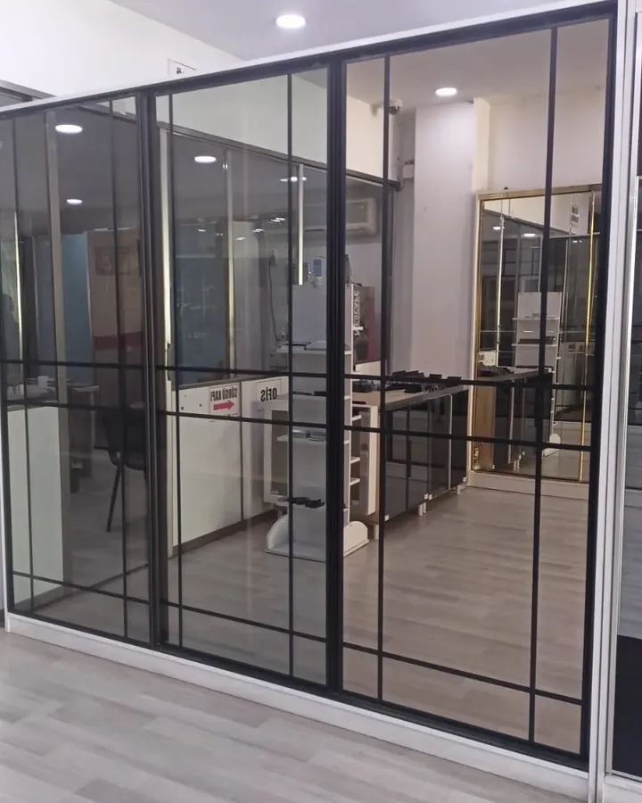
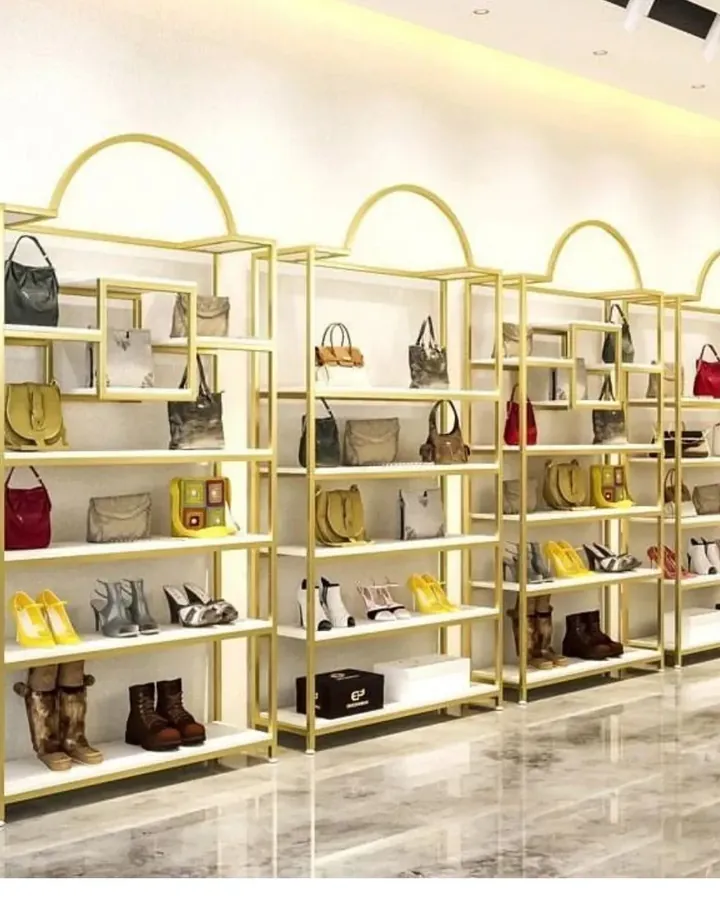
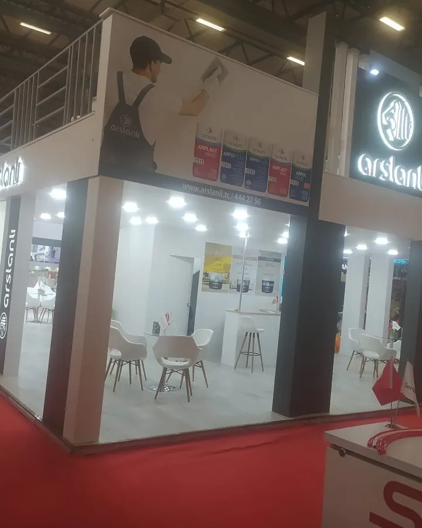
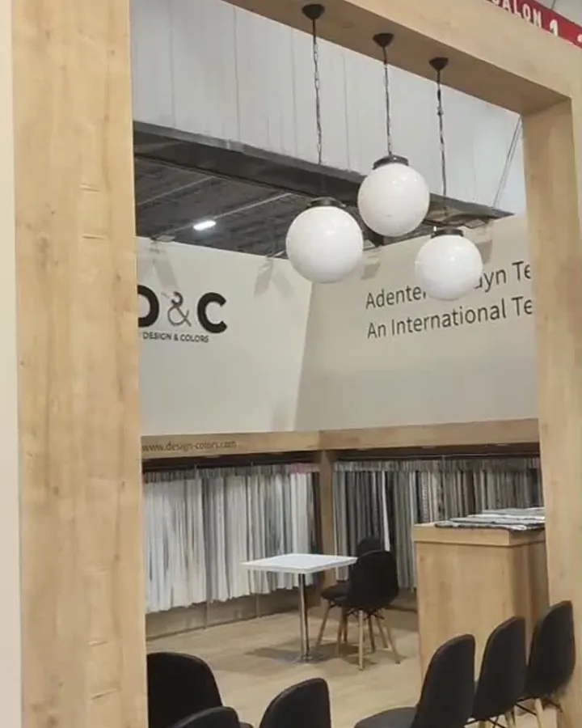
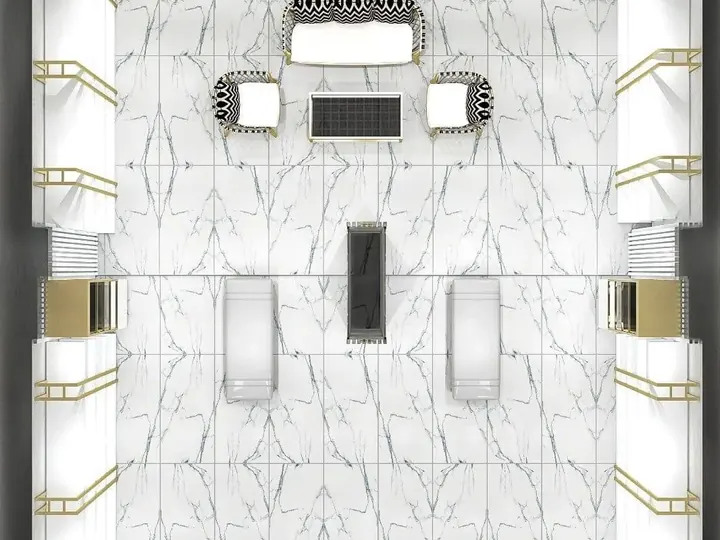

Mobilya iyi,
mekân bambaşka.
Türkiye ve Balkanlar’da ölçüye özel mobilya, mutfak, zemin ve iç mimarlık projelerini fikirden uygulamaya taşıyoruz.
tasarımla buluşan mekânlar
size özel
Birlikte tasarlayalım.
Güzelce yaşayalım.
Tek bir oda, yepyeni bir ev ya da alışılmışın dışında bir fikir… İhtiyacınıza göre şekillenen tasarım ve uygulama çözümleri.
 01
01Salon & oturma odası
TV duvarı, depolama ve aydınlatmayı tek planda toplayan yaşam alanları.

02Mutfak dolabı
Akıllı depolama, dayanıklı malzeme ve yalın çizgiler.
 03
03Ölçüye özel mobilya
Gardırop, gömme dolap ve nişler; alanın her santimi için.

04Mobilya & dekorasyon
Duvar ünitesi, ayna nişi ve dekoratif panellerde bütünlüklü tasarım.
 05
05Çocuk & genç odası
Çalışma, depolama ve oyun alanını birlikte planlayan odalar.

06İç mimarlık
Keşif, konsept, malzeme ve uygulama koordinasyonu.

07Showroom & mağaza
Ürünü öne çıkaran teşhir üniteleri ve mağaza mobilyası.

08Fuar standı tasarımı
Tasarım, üretim ve kurulumuyla anahtar teslim stant.

09Tekstil fuarı standı
Ev tekstili ve perde teşhirine uygun stant düzeni.
 10
10Zemin döşeme
Mekânın bütününe uyumlu doku, ton ve uygulama.
 11
11Ekstrem & özel projeler
“Böyle bir şey mümkün mü?” diye sorduğunuz yerde başlar.
Projenizi konuşalım
Alan fotoğrafınızı ve ihtiyacınızı paylaşın; doğru yönü birlikte belirleyelim.
Görüşme başlatın ↗✳
Trendler gelir geçer.
Sizin hissettikleriniz
hep sizinle kalır.
Önce sizi dinliyoruz. Sonra günlük hayatınıza uyan planı, dokuyu ve renkleri birlikte keşfediyoruz. Sonuç: sadece güzel görünen değil, içinde iyi hissettiren bir mekân.
Tanışalım ↗Mekâna değerkatan tasarım
Fikirden mekâna.
Her proje yeni bir hikâye. Sizin hikâyeniz nasıl bir yerde yaşamak istiyor?


Fotoğraflar saha arşivinden seçilmiştir. Başlıklar görselde görülen alanı tarif eder; proje ve müşteri bilgisi içermez.
Tüm saha fotoğraflarını gör ＋
Mobilya detayları,
farklı ihtimaller.
İşin akışını
videoda izleyin.
Mağaza, showroom, mutfak ve depolama mobilyalarının saha uygulama detaylarını ilgili alan başlığıyla izleyin.
Markanız için
ölçekte üretilebilir mobilya.
Mobilya markaları, yapı marketleri ve perakende ekipleriyle özel ürün, teşhir ünitesi, mağaza mobilyası ve tekrarlanabilir iç mekân çözümlerini değerlendirmeye açığız.
- Ölçüye özel mobilya
- Mağaza ve showroom çözümleri
- Ürün ve teşhir sistemleri
- Avrupa geneli proje talepleri
 Mağaza teşhir rafları · saha
Mağaza teşhir rafları · saha Showroom · 3D tasarım
Showroom · 3D tasarım Mağaza cephesi · 3D tasarım
Mağaza cephesi · 3D tasarım
Mağaza yerleşim planı · 3D
Güzel fikirler
sınır tanımaz.
Türkiye ve Avrupa’daki iç mekân projelerinizi birlikte değerlendirelim. Projenizin konumunu ve kapsamını paylaşın; size uygun çalışma şeklini konuşalım.
Nasıl ilerliyoruz?
Sizi dinliyoruz
İhtiyacınızı, beğenilerinizi, konumunuzu ve önceliklerinizi tanıyoruz.
Fikri şekillendiriyoruz
Kapsamı, tasarım yaklaşımını ve sonraki adımları birlikte netleştiriyoruz.
Mekâna hayat veriyoruz
Üzerinde anlaştığımız çözümü, belirlenen kapsam ve süreçte ilerletiyoruz.
Aklınızdaki
sorular.
Projenizle ilgili sorularınız mı var? İlk mesajınızda kısaca anlatın, birlikte değerlendirelim.
Hangi hizmetleri sunuyorsunuz?＋
İç mimarlık ve mekân tasarımı, mobilya ve dekorasyon, ölçüye özel mutfak ve dolap tasarımı, zemin döşeme, salon, oturma odası ve çocuk odası düzenlemeleri ile özel projeler üzerinde çalışıyoruz. Projenizin kapsamını ilk görüşmede netleştiriyoruz.
Avrupa ülkelerindeki projeler için çalışabilir miyiz?＋
Türkiye ve Avrupa’daki proje taleplerinizi değerlendiriyoruz. Konum, proje kapsamı ve ihtiyaç duyulan hizmeti paylaşın; uygun çalışma biçimini birlikte konuşalım.
İlk görüşme için hangi bilgileri paylaşmalıyım?＋
Proje konumu, düşündüğünüz alan veya oda, hedeflediğiniz değişiklik, yaklaşık zamanlama ve varsa ilham görselleri iyi bir başlangıç sağlar. Bütçeniz varsa belirtmeniz öneri kapsamını doğru şekillendirmeye yardımcı olur.
Sadece tasarım hizmeti alabilir miyim?＋
İhtiyaca göre tasarım odaklı destek veya tasarım ve uygulamayı kapsayan çalışma değerlendirilebilir. Kapsam ve hizmet uygunluğu ilk görüşmede netleştirilir.
Fiyat teklifi nasıl alabilirim?＋
Projenizin yeri, büyüklüğü ve ihtiyaçlarını kısaca anlatın. Bilgiler incelendikten sonra izlenecek kapsam ve teklif süreci sizinle paylaşılır.
Projeniz için doğru çözümü bulun.
Bir fikriniz mi
var?
Ne hayal ettiğinizi anlatın. İlk sohbetimizde projenizin ihtiyaçlarını ve olası sonraki adımları konuşalım.